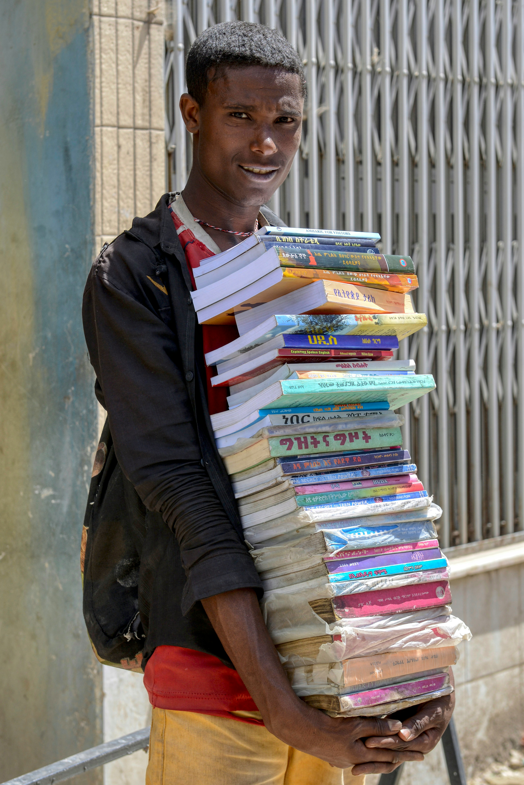

página de doação de materiais escolares online
Como funciona?
Veja como você pode ajudar a transformar o estudo de alguém na nossa região.
Quem Somos
O EducaDoa nasceu da vontade de fortalecer a educação em Cornélio Procópio e região. Sabemos que muitos estudantes possuem materiais em bom estado que não utilizam mais, enquanto outros enfrentam dificuldades para adquirir o básico para seus estudos.
Nossa Missão
Nossa missão é facilitar essa ponte. Através da nossa plataforma, você pode anunciar cadernos, lápis, mochilas e livros. Quem precisa pode visualizar os itens disponíveis por proximidade e entrar em contato para receber a doação.
Acreditamos que o conhecimento deve circular. Quando você doa um item de estudo, você não está apenas esvaziando uma gaveta, está abrindo portas para o futuro de um colega estudante.


